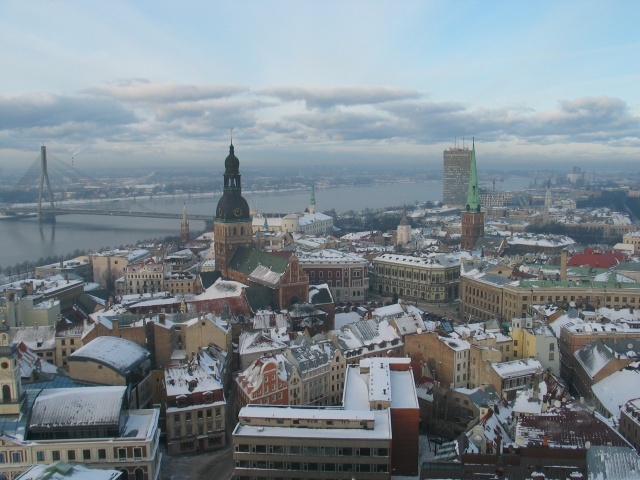

Rīga ir Latvijas galvaspilsēta un galvenais rūpniecības, darījumu, kultūras, sporta un finanšu centrs Baltijas valstīs, kā arī nozīmīga ostas pilsēta.
Interesanti fakti:
- 627 487 iedzīvotājiem
- 2020. gadā tā ir lielākā pilsēta Baltijas valstīs un trešā lielākā pilsēta (pēc Sanktpēterburgas un Stokholmas) visā Baltijas jūras reģionā (pēc iedzīvotāju skaita pilsētas robežās).
- Rīgas pilsētas platība ir 307,17 km2.
- Rīgas pilsētas robežās dzīvo aptuveni viena trešdaļa, bet Rīgas aglomerācijā (Rīga un tai piegulošā teritorija, ieskaitot tuvākās pilsētas) vairāk nekā puse (1,07 miljoni) visu Latvijas iedzīvotāju.
- Rīgas plānošanas reģionā 2010. gada sākumā dzīvoja 1 081 137 iedzīvotāji.
- Rīgas vēsturiskais centrs ir iekļauts UNESCO Pasaules kultūras mantojuma sarakstā un ir ievērojams ar jūgendstila arhitektūru, kurai, pēc UNESCO viedokļa, nav līdzīgu pasaulē.
- Rīga bija viena no 2014. gada Eiropas kultūras galvaspilsētām.
- Rīgas klimata veidošanā svarīga nozīme ir Atlantijas okeāna mēreno platuma grādu gaisa masām, kas saistītas ar aktīvu ciklonisko darbību.
Rīga ir moderna pilsēta ar bagātu vēsturisko mantojumu, kura vilina ar daudzveidīgām kultūras un gastronomiskām izklaidēm, pārsteidzošu arhitektūru un saviļņojošas dabas tuvumu. Nebaidamies teikt, ka Rīga ir kosmopolītiskākā no Baltijas valstu galvaspilsētām. Rīgas rajonos notiek katru dienu
- KLASISKĀS MŪZIKAS KONCERTI
- BĒRNU PASĀKUMI
- VIRTUĀLIE PASĀKUMI
- utt.